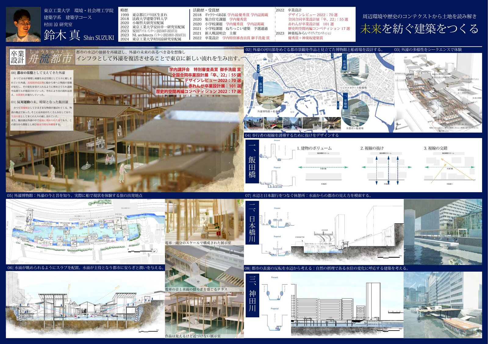

2022 · Graduation Design
Funagare Toshi舟流都市
Water and City from Sotobori外濠から考える水と都市の向き合い方
Sotobori — the outer moat of Edo Castle — once served as a vital waterway infrastructure for Tokyo, connecting people and goods across the city. During Japan's rapid economic growth, however, the moat was gradually filled in as transport shifted from boats to cars. Roads and high-rise buildings replaced the waterfront, water circulation ceased, and water quality deteriorated.
外濠はかつて江戸城の外堀として、東京の水運インフラの中心を担ってきた。しかし高度経済成長期、物流の基盤が船から車へ移行するにつれ、外濠は埋め立てられ、道路や高層ビルへと変貌した。水の流れは失われ、水質悪化が進行していった。
This graduation project proposes the revival of Sotobori as contemporary infrastructure — restoring the waterway not merely as an aesthetic feature, but as a functional carrier of movement, ecology, and urban memory. The design creates a series of boat docks, museums, and public spaces along the moat, reconnecting the city's three river arteries: the Kanda River, the Nihonbashi River, and Sotobori itself.
本設計は外濠を現代のインフラとして復活させる提案である。水路を単なる景観要素ではなく、移動・生態・都市の記憶を運ぶ機能的な装置として再定義する。神田川・日本橋川・外濠の三つの水の軸を結ぶように、船着場・博物館・公共空間を連続配置し、東京に新しい流れを生み出す。
The project centers on Iidabashi, where the now-culverted Iida Moat once served as a loading dock for goods. The design revives this forgotten place as an Outer Moat Museum and boat landing — a space where the layered history of the waterfront can be physically experienced through section, sequence, and movement.
設計の中心は、かつて荷揚場として機能していた飯田濠（現在は暗渠）。ここに「外濠博物館」と船着場を設計し、石垣・水面・電車の音が交差するシークエンスを通じて、水辺の重層的な歴史を身体的に体験できる場所をつくる。

Full presentation sheet作品シート全体